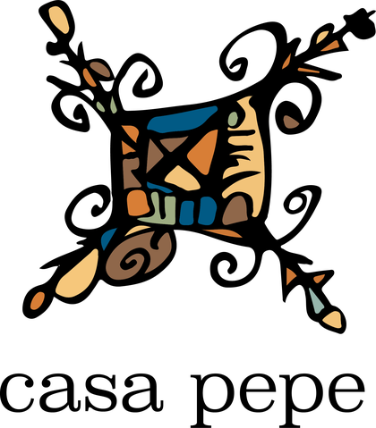

01
Artistas
Residencias, foro de música, sala de exposiciones o de ensayo, cine y teatro. Acercamos la oferta artística local al viajero, y el viajero artista al local.
01Artistas

Turismo de Comunidades
«Solo hay dos viajeros.
Grupo Casa Pepe fomenta los viajeros de paz.»
La industria turística se debe reinventar evitando los fenómenos intrínsecos que generan desplazamiento de las comunidades locales, defectos en la derrama económica y falta de diálogo entre anfitriones y visitantes.
Casa Pepe lleva 9 años trabajando con viajeros y comunidades locales de México.
En 2027 comienza una nueva etapa como Grupo Casa Pepe.
Residencias, foro de música, sala de exposiciones o de ensayo, cine y teatro. Acercamos la oferta artística local al viajero, y el viajero artista al local.
Cooperativas o familias con oficio propio que preservan las técnicas ancestrales o heredadas de su legado familiar. Su obra también tiene nombre, se comparte en talleres y se vende sin regateos.
La distancia a los polos productivos les ha permitido preservar sus tradiciones y su vida. Sin embargo, la voluntad de progreso de las nuevas generaciones ve en el turismo un eje de desarrollo socioeconómico con preservación cultural.
El buen viajero es el que no desplaza: intercambia cultura con la comunidad local y genera prosperidad económica. Esa es la comunidad que abandera el viaje de paz.
Tres marcas con oficios distintos y un mismo suelo. Se sostienen entre sí: el huésped de una acaba en el escenario de la otra y en el taller de la tercera.

Hotel con vocación de hostal que promueve el encuentro de viajeros en un ambiente humanista.


Fábrica de intangibles para artistas y artesanos del viaje y la cultura. Espacio de crítica turística y de reflexión del viaje.


Concierge online para viajeros, que promueve experiencias y viajeros que buscan dejar un impacto socioeconómico y cultural en la comunidad local.


No son proveedores ni decorado: son socios de los que depende el producto. Esta lista crece despacio, porque cada nombre que entra aquí ha pasado por una mesa, un acuerdo y un reparto.

Reciben en su territorio, en sus cabañas y en sus términos. Su artesanía se vende con el nombre de cada artesana, y lo que se vende de cada una es lo que cobra cada una.

La familia que le puso nombre a los alebrijes. Taller, oficio heredado y piezas que salen de sus manos a la habitación del huésped.

El oficio que escribió a mano los muros de la ciudad. Con taller abierto en el Ateneo de Virreyes, de la mano de Óscar Reyes.

Mujeres al frente de la tornamesa en una tradición de barrio que se hereda. El sonidero como lo que siempre fue: una fiesta que convoca a la cuadra entera.
Si quieres venir, trabajar con nosotros o traer a tu comunidad a la mesa, escríbenos.